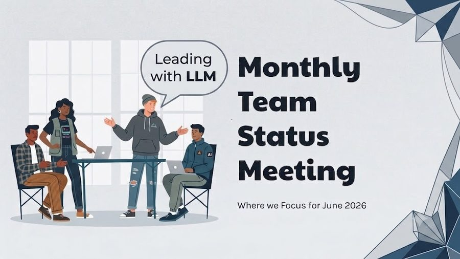

An AI setup guide for leaders who want to lead the meeting’s strategy — and direct the AI through the production
Hugh McCutchen · v2.1 · July 2026 · ~20-minute setup
The idea
Lead the meeting. Delegate the production.
Pro tip
Save this file as HTML and paste it into an empty chat thread in a fresh project. Tell your chat tool to use it to guide you through setup of your Monthly Report Builder project. Tell it to ask you for what is needed and to help you refine and customize the project to meet your needs.
The first time most people use an AI assistant for a team presentation, the reaction is the same: it found the content, organized it, and produced something close to usable — faster than expected. That moment is the baseline, not the ceiling.
The step that separates occasional users from people who get consistent value is leading the work rather than just starting it. A capable assistant is genuinely strong at collecting information across email and documents, synthesizing what is relevant, and turning it into structured, readable output. What it cannot supply on its own is the strategy of the meeting — what the story is this month, what your team needs to hear, what decision the room has to make. That is leadership work, and it stays with you. The files and details that support it are production work, and that is what you delegate.
This guide builds that division in. It sets up a workspace that carries your template, your process, and optionally your writing style forward from one session to the next. You direct. The assistant produces.
I built and run this in Claude, so Claude is the worked example throughout. Most of it — my estimate is 90% — carries to ChatGPT or Microsoft Copilot with small adaptations; the table below maps the terms. And an honest disclosure: I designed this for a colleague and it has not yet been through months of field use. Run it and tell me what breaks.
The same idea in each tool
Concept in this guide
Claude
ChatGPT
Microsoft Copilot
Workspace that persists across sessions
Project
Project
Notebook / agent, by plan
Standing instructions field
Project instructions
Project instructions
Agent instructions
Attached reference files
Project files
Project files
Grounding files
Email / document search
Connectors
Connectors
Microsoft Graph (built in)
Names move fast in these products; treat the table as a map, not a spec, and check your tool’s current documentation. The process in this guide is the part that transfers.
This guide gives you three things
Part
What it is
Part 1
Setup Guide — a one-time checklist to get your workspace configured.
Part 2
Workspace Instructions — a short block you paste into the instructions field. Acts as a router. Stays small so you have room to add more skills later.
Part 3
Deck Skill File — the full process spec. Save this as a file and attach it to the workspace. The assistant loads it when you ask for a deck.
Why three parts?
Instructions fields have size limits — in every one of these tools. Put the full process there and you will hit the ceiling, especially once you add a second skill. The fix: keep the instructions field short and use it as a router. The real spec lives in an attached file, where there is no limit.
How to use this guide
Read Part 1 and follow the setup steps once.
Copy Part 2 into your workspace instructions field exactly as written.
Copy Part 3 into a plain text file, name it DeckSkill.md, attach it to the workspace. (Both are also downloadable below.)
Optional steps are marked. Skip them and the system still works. Do them and the deck sounds like you.

YOU LEAD THE STRATEGY. THE ASSISTANT HANDLES THE PRODUCTION.
Part One
Setup Guide — do this once, about 20 minutes
Step 1 — Create a workspace
In your assistant, create a new project (Claude or ChatGPT) or the equivalent persistent workspace in your tool. Name it something clear:
Team Communication
— or —
[Your Team Name] Decks and Updates
All your monthly deck work — and any future communication skills — lives here. The workspace stores your instructions and reference files so the assistant carries context into every new session automatically.
Step 2 — Add the instructions
Open the workspace settings and paste in the text from Part 2 exactly as written. About ten lines. It tells the assistant that skill files are how this workspace works and where to look for them.
Do not put the full deck process in the instructions field. That goes in a file — see Step 3.
Step 3 — Create and attach the Deck Skill File
Part 3 is the full deck process in plain text. Copy it into any plain text editor — Notepad, TextEdit, Notes — or use the download link under the block. Fill in the four fields in brackets:
Your title
Your team name, size, and function
Who is in the room for these meetings
Two to four standing themes your team cares about year-round
Save the file as DeckSkill.md and attach it to your workspace. A capable assistant finds it by description — you do not need to name it precisely each session.
Step 4 — Create a slide template reference
Start a new chat thread inside the workspace. Say:
I want to create a reference description of my standard slide template.
Ask me questions about my format — colors, fonts, section layout, title
style, and visual conventions — and produce a plain text description
I can save as a reference file.
Save the output as a plain text file and attach it to the workspace. Name it something obvious.
OPTIONAL — Step 4a: Build your writing style guide
This step makes the deck sound like you wrote it. Skip it and the output will be clean and professional. Do it and the deck will carry your own craft and voice.
What this does. The assistant analyzes slides you have already made and extracts a personal style guide: how you title things, how much text you put on a slide, how you structure an argument, what your native diagram patterns look like. That file goes into your workspace and the assistant refers to it every session.
What you need. Ten to twenty slides that honestly represent how you communicate. Variety beats polish. Slides from different decks are fine.
Warnings
Use native .pptx files, not PDFs, JPGs, or screenshots. The assistant reads text and diagram structure directly from a .pptx; images of slides degrade the analysis.
Remove anything confidential. The content does not matter — the writing patterns do.
You can pull from multiple decks. Combine into one file or attach up to three or four source files.
The session — do this once in a new thread. Start a new thread inside the workspace. Attach your sample slides. Say:
I want to build a writing style guide for my PowerPoint decks.
I'm attaching slides that represent how I like to communicate.
Analyze them and produce a style guide I can save to my workspace.
The assistant reads your slides, then asks a few questions about choices you made. That conversation is where your intent gets captured. Save the result as a plain text file and attach it to the workspace.
Update it over time. After a few sessions you will notice things it missed. Start a thread, paste the relevant section, say update this.
Step 5 — Start your first deck session
Start a new chat thread inside the workspace — one thread per meeting, no exceptions. Say:
I want to work on my monthly deck for [month]. Let's start.
The assistant finds the deck skill file, loads the process, and walks you through it step by step. Attach any month-specific files directly in the thread.
Warnings
Do not attach PDFs, PPT files, or images to the workspace. Attach month-specific files to the thread that needs them.
If you have a lot of source material, paste key excerpts rather than attaching large files.
One thread per meeting. Do not reuse a thread across months.
Do not load dozens of files into the workspace. Only attach things with long-term usefulness in plain text format.
Adding more skills later
When you want help with a different kind of communication — a boss report, a skip-level prep, a board update — add a new skill file using the same pattern: write the process as plain text, save as a .md file, attach to the workspace. The instructions already route requests to the right skill file. Nothing else to update.
Part Two
Workspace Instructions — paste exactly as written
This is a router, not a spec. About ten lines. Do not add to it or reformat it.
Paste into your workspace instructions field
This project supports team communication work. Available skills:
- Monthly team meeting deck: load the deck skill file attached
to this project and follow its process.
When the user names a task, find the matching skill file in the
project files and load it. The skill file contains all instructions,
sources, and process steps.
If no matching skill file exists for what the user wants to do,
say so and ask them to add the right file to the project.
Copy everything below into a plain text editor, or download the ready-made file. Fill in the four fields in brackets. Save as DeckSkill.md. Attach to your workspace. Plain text only — no formatting.
DeckSkill.md — full contents
SKILL: Monthly Team Meeting Deck
PURPOSE
Help me build a PowerPoint deck for my monthly team meeting.
I own the story and what gets included. You find the content,
write the copy, and produce the formatted output.
ABOUT ME AND MY TEAM
Fill in these fields when you set up your project:
My role: [your title]
My team: [team name, size, function]
Audience: [who is in the room - direct reports, leadership, etc.]
Standing themes: [2-4 topics your team cares about year-round]
REFERENCE FILES
This project may have reference files attached. Look for them and
use what you find - do not require an exact filename match:
Template file: A file describing my slide template - colors, fonts,
section layout, title conventions. Use it to format every slide
consistently. If you do not find one, ask me before generating slides.
Style guide: A file describing how I write slides - text density,
argument structure, tone, and what I avoid. If you find one, apply
it to all copy. If you do not find one, use clean professional
defaults and note that the optional style guide setup is available.
SOURCES - search all three, in this order
1. Email - last 45 days. Emails to/from my team and from
leadership to me. Flag wins, risks, and leadership priorities.
2. Documents - files I have worked on related to my topics, updated
in the last 45 days.
3. My input - after searching, ask what else I want to add.
SLIDE STRUCTURE (default - I may adjust each month)
1. Agenda
2. Company / Leadership Updates
3. Team / Department Updates
4. Wins and High Fives
5. Anniversaries and New Hires
6. Meaty Topic 1
7. Meaty Topic 2
8. Meaty Topic 3 (drop if not needed)
MEATY TOPIC STANDARD
Every substantive topic slide must include:
- SO WHAT: one sentence on why this matters
- Revenue connection: name it if it exists; say so briefly if not
- Required actions: action / owner / deadline
- Decision needed: call it out if the team must decide something
PROCESS - follow in order, do not skip steps
Step 1 - Get the basics
Ask for the meeting date and the 2-4 topics I want to cover.
Step 2 - Research
Search email and documents. Present a brief summary - what you
found, what looks relevant, what you recommend including.
One short paragraph per topic. Not a data dump.
Step 3 - Story gate (do not skip)
Ask me: for each topic, what is the headline the team should
walk away with? I set the story. Do not infer from sources.
Step 4 - Meaty topic detail
For each meaty topic, ask me to confirm or add:
- the SO WHAT
- supporting data or talking points not found in sources
- who owns the action items
Step 5 - Draft outline
Present a one-line-per-slide outline for my approval.
Wait for confirmation before writing any slide copy.
Step 6 - Generate the deck
Build the full .pptx from the approved outline.
Use the template if one is attached to this project.
Name the file: [TeamName]_MonthlyDeck_[YYYY-MM].pptx
Step 7 - Handoff
Present the file. Tell me what to verify before the meeting
and whether anything looked important but did not make the cut.
AudienceBusiness leader using any capable AI assistant for monthly team decks — built in Claude, adaptable to ChatGPT and Microsoft Copilot; new or occasional AI user with email and document access
SourcesGoogle Doc MonthlyDeckGuide_v4 (v4.0, 2026-06-19, read in full per RES-314); Hugh’s v2.0 direction in-session (2026-07-07): strategy-not-production thesis, genericize across assistants; Linear RES-347 (build ticket), RES-353 (placement); white-paper structural exemplar claude-guide/WPP-S11-WHITEPAPER-v2.2.html; "Monthly Slide Deck Image.jpg" supplied by Hugh at placement (BURSBUILD-S09)
Decision / Actionv2.0 reframe per Hugh: the guide is for leaders who direct the AI and lead the meeting’s strategy while delegating production; rewritten generically for any capable assistant with Claude as the worked example and a cross-tool term map; .pptx warning corrected (images degrade analysis, not “cannot read”); Part 2/3 blocks now also ship as downloadable files; untested-design disclosure added to the intro. At placement (BURSBUILD-S09): added a Pro Tip callout box; then a closer figure ending "The idea" section, plus a 3:2-cropped hub-card image on llm-leadership.html, both sourced from the same Hugh-supplied photo.
Iteration notesv2.1: section-nav added (RES-313 opt-in; part headings to h2.section-title); quick-reference tables made readable on the dark band (solid row backgrounds, explicit ink); row-hover highlight removed. v2.0: Hugh-directed reframe (subtitle thesis, genericization, downloads, accuracy fixes). v1.0 (web): first HTML edition, from source v4.0. Placement (BURSBUILD-S09, same v2.1): Pro Tip callout added, then a closer figure + hub-card image in a second edit; body text otherwise byte-faithful to the BURSFORGE submission throughout.
AssumptionsReader has email and document access wired to their assistant. Cross-tool equivalence table reflects product naming as of mid-2026 and is labeled a map, not a spec; “roughly 90% carries” is the author’s estimate. The 45-day lookback and the default slide structure are starting points, not prescriptions.
Scope exclusionsog:image still not added for this page (RES-354 open here specifically); boss report and other skill variations; per-tool setup walkthroughs for ChatGPT and Copilot (term map only); slide design guidance beyond the template-reference step; troubleshooting/failure paths (deferred — wants field data first).